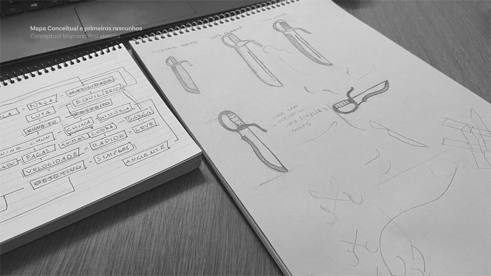

Brand Design
Branding is the most important part of your company. Without it, your business has no image, cannot be identified, and as a result, be just one more among others.
I have 4 years of experience building brands with meaning, which connects with their audience, build a strong personality in the world and are, in the most important, human. Having a professinal Brand Identity brings to your company value, customers and results.
From the first contact to the final project, build a brand is a complex task, which envolves a lot of steps that I would be pleased to discuss further with you :D

UX and UI Design
UX and UI are correlated. One does not exists without the other.
UI and UX are not just on websites, but also in applications, systems, phones, cars, everywhere.
Sketching, wireframing and prototyping are part of an UX/UI project. The importance of these two things are huge for a business. What would a website that isn't easy to navigate mean to your customer?

Web Development
No website builders, please!
Development is the core of an website, it's there where everything happens. Animations, texts, content, everything.
Web development, aligned with brand an UX/UI design, is a powerful tool to build a champion website.